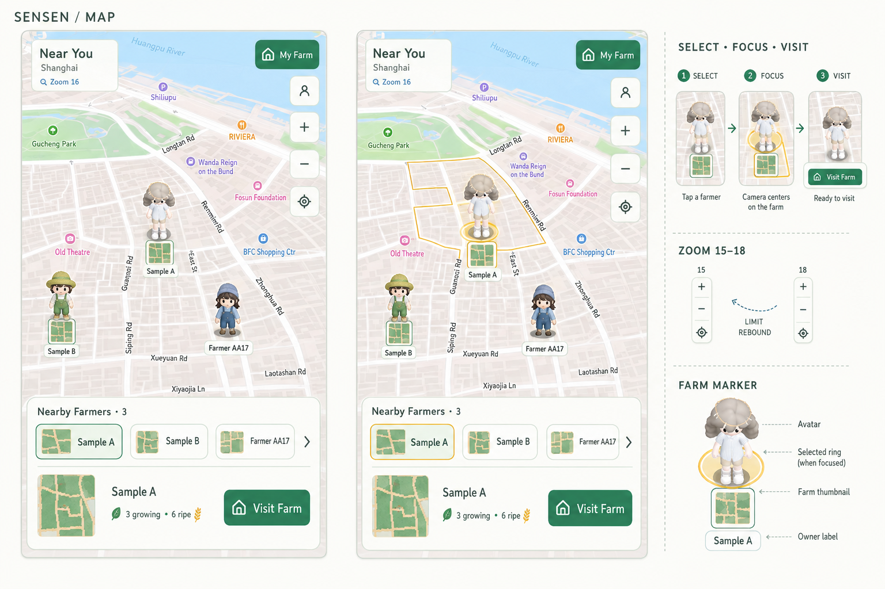
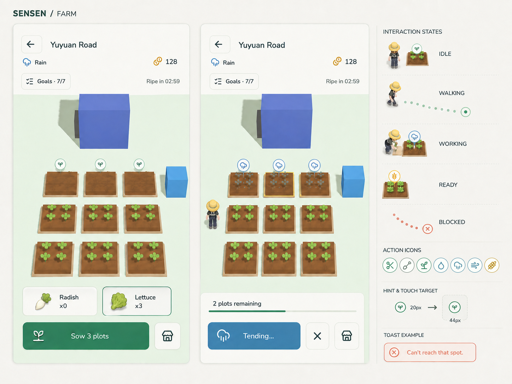
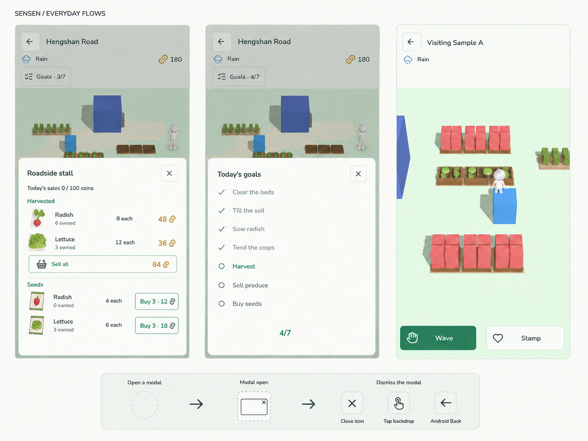
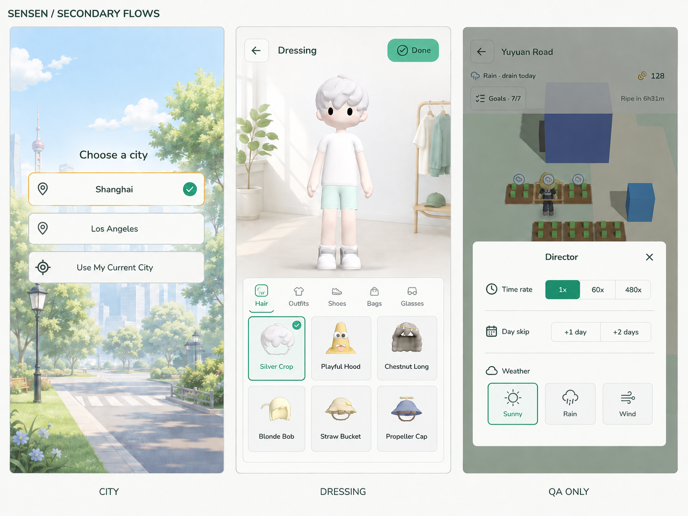

2026-09-05 · sensenjoy · gpt-image-2 · 4 张设计板
以下为使用游戏运行截图作参考生成的 AI 设计概念稿。图中的植物、场景细节和部分排版是设计表达，当前安装包的实际效果以操作指南中的截图为准。

角色与蓝图标记、选中后聚焦、15–18 级缩放及边界回弹。

顶部状态、底部单一主动作、九块田的轻量提示和移动反馈。

互斥弹层、交易信息层级、目标清单与只读拜访。

简洁城市选择、完整角色展示、服装缩略图和独立 QA 控件。